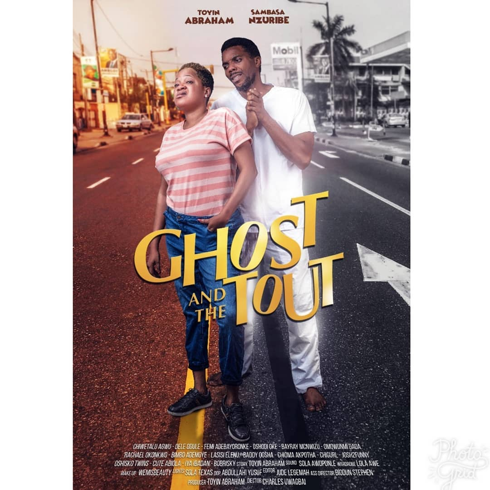

The Avengers
The Avengers is a 2012 Marvel movie about a group of superheroes who must work together to stop Loki and his alien army from enslaving humanity: Plot: Nick Fury, the head of S.H.I.E.L.D., recruits Earth's mightiest heroes to stop Loki, who is searching for the Tesseract, a mysterious artifact with limitless energy. The heroes include Iron Man, Captain America, The Hulk, Thor, Black Widow, and Hawkeye. Characters: The movie features some of the most popular Marvel superheroes, including: Tony Stark: Also known as Iron Man Steve Rogers: Also known as Captain America Bruce Banner: Also known as The Hulk Thor: The prince of thunder Natasha Romanoff: Also known as Black Widow Clint Barton: Also known as Hawkeye Director: Joss Whedon Writer: Joss Whedon and Zak Penn Awards: The movie has won 39 awards and received 81 nominations, including one Oscar nomination An Unbiased Review of the Marvel “Avengers” Movie – Ex Urbe Some say the movie is a spectacular, witty entertainment with a redemptive, moral worldview that's suitable for teenagers and older children. Others praise the movie for its visual effects, character development, and acting.

for more info , click here
The Forge
The Forge is a 2024 Christian drama film about a 19-year-old who is challenged to grow up and find his purpose in life: Plot Isaiah Wright (Aspen Kennedy) is a video game-obsessed basketball player who is given one month by his single mom to find a job or move out. He lands a job at Moore Fitness, where he is mentored by the company's Christian owner, Joshua Moore (Cameron Arnett). Through Joshua's discipleship and Isaiah's own prayers, Isaiah discovers God's purpose for his life and accepts Christ. Themes The movie explores themes of friendship, communication, compassion, and humility. It also offers a counter-cultural view of biblical manhood, encouraging young men to take responsibility and step up. Reviews Some say the movie is a must-see for younger generations and that it has a powerful religious message. Others say the first act is slow, but the movie becomes more exciting once the jeopardy starts. Cast and crew The movie was directed by Alex Kendrick and also stars Priscilla Shirer. It was released in theaters on August 23, 2024 and will be available on DVD or streaming on October 8, 2024.

for more info , click here
The Sound of Music
The Sound of Music is a 1965 musical film about a young woman who becomes the governess for the children of a widowed naval captain in 1930s Austria: Setting: The story takes place in Austria on the eve of the Anschluss in 1938. Characters: The main characters are: Maria: A fun-loving novice who leaves her convent to become a governess Captain von Trapp: A widowed naval captain who falls in love with Maria Children: The seven children of Captain von Trapp who Maria wins over with her love of music Plot: Maria's generosity and love of music capture the captain's heart, and they fall in love and marry. However, when the Nazis invade Austria, the captain is ordered to join the German Navy, and he and Maria must flee with the children to Switzerland. Music: The film features many well-known songs, including "Do-Re-Mi", "My Favorite Things", "Edelweiss", "Climb Ev'ry Mountain", and the title song "The Sound of Music". Awards: The film won five Academy Awards, including Best Picture. Director: Robert Wise Stars: Julie Andrews, Christopher Plummer, and Eleanor Parker How The Sound of Music led the way for the critic-proof hit ... The movie is considered a family-friendly classic and is often aired on television during the Christmas season. Some say it's a sweet and corny film with classic songs, while others say it's irresistible schmaltz.

for more info , click here
Along with the gods
Along With the Gods: The Two Worlds is a 2017 action-adventure fantasy film about a firefighter who dies in the line of duty and must navigate the afterlife with the help of three guardians: Plot After dying in a fire, firefighter Kim Ja-hong is escorted to the afterlife by three guardians: Kangrim, Haewonmaek, and Dukchoon. They explain that Ja-hong must pass seven trials over 49 days to prove his innocence and be eligible for reincarnation. The guardians will defend him in the trials, and if they are successful, they will also be reincarnated. However, a vengeful spirit causes disturbances in the afterlife, putting Ja-hong's plans in jeopardy. Cast The film stars Cha Tae-hyun as Kim Ja-hong, Kim Hyang-gi as Deok-choon, Ju Ji-hoon as Hewonmak, and Ha as Gang-lim. Reception The film was well-received by critics, with 67% of critics giving it a positive review on Rotten Tomatoes. Some critics praised the film for its fun, while others criticized it for its convoluted plot twists. Based on The film is based on the popular webcomic #AlongWithTheGods: #TheTwoWorlds.

for more info , click here
The Ghost and the Tout
The Ghost and the Tout is a 2018 Nigerian ghost film about a young woman who helps a ghost communicate with the living and becomes involved in a murder mystery: Plot: Isila (Toyin Abraham), a young woman from the ghetto, encounters a ghost named Mike (Sambasa Nzeribe) who asks for her help to communicate with the living. Isila becomes involved in solving a murder mystery and her life takes an interesting turn. Cast: The film also stars Rachael Okonkwo and Omowumi Dada. Director: Charles Uwagbai wrote and directed the film. Release: The film was released in Nigerian theaters on May 11, 2018. Reception: The film received positive reviews from critics and was a huge box office success. It grossed 30 million within one week and was the fifth highest grossing Nigerian film in 2018. Availability: The film is available to stream on Netflix
for more info , click here